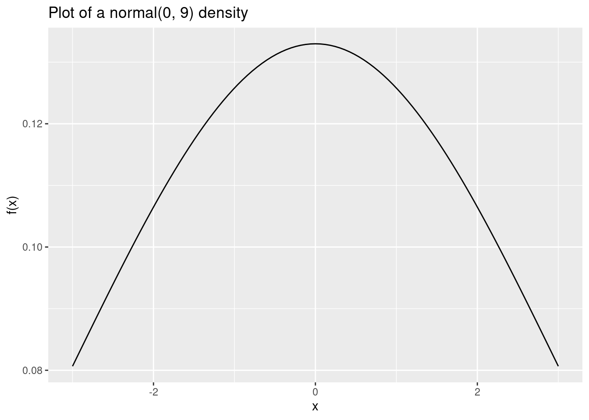
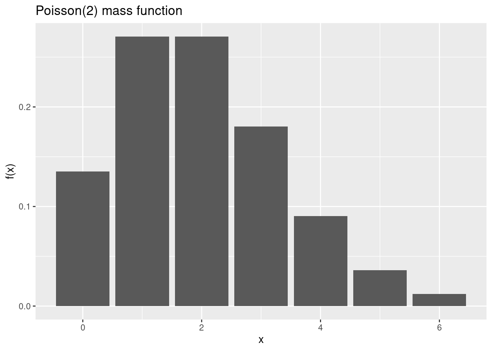

# example 1
0.2 == 0.6 / 3
# example 2
point3 <- c(0.3, 0.4 - 0.1, 0.5 - 0.2, 0.6 - 0.3, 0.7 - 0.4)
point3
point3 == 0.3Hello R.
This ‘lab 0’ will introduce you to the course computing workflow. The main goal of today is to get you setup in RStudio and play around with a few fundamental skills.
Important
This lab will not be graded.
R and R Studio
Below are the components of the RStudio IDE.

Below are the components of a Quarto (.qmd) file. Note: this is essentially the same as an Rmarkdown (.Rmd) file, with a couple built-in quality of life additions.

YAML
The top portion of your Quarto or R markdown file (between the three dashed lines) is called YAML. It stands for “YAML Ain’t Markup Language”. It is a human friendly data serialization standard for all programming languages. All you need to know is that this area is called the YAML (we will refer to it as such) and that it contains meta information about your document.
Important
Go to file > new file, Quarto document. Input title “Lab 0”, and change the author name to your name. Select pdf output and press Create. Render the document. Examine the rendered document.
LaTeX
Assignments in this course are not required to be written in LaTeX. You may write equations by hand and scan them as a pdf to submit to Gradescope. However, LaTeX is the typesetting system to communicate statistics and mathematics professionally. It’s worthwhile to use. Moreover, it’s fully supported within .Rmd and .qmd files.
If you’re using R on your local machine, you may need to install
- MiKTeX (if you’re using windows): https://miktex.org/
- MacTeX (if you’re using macOS): https://www.tug.org/mactex/
- TeXLive (if you’re using linux): https://tug.org/texlive/
To write a LaTeX equation within your markdown document, simply use $$ to surround blocks of math and $ to surround in-line math.
Example: copy and paste the following and then render.
We can see that $\beta_0 = 2$ and $\beta_1 = 3$ is the OLS solution under our model
$$
y = \beta_0 + \beta_1 x
$$
Note
There is no space between $ and math. Whitespace may cause the document to fail to render.
Check out this LaTeX cheatsheet to typeset a variety of math.
Exercises
The following exercises are designed to help you gain basic familiarity with R as well as the quirks of floating point arithmetic.
- Floating point algebra.
Do floating point numbers obey the rules of algebra? For example, one of the rules of algebra is additive association.(x + y) + z == x + (y + z). Check if this is true inRusing \(x = 0.1\), \(y = 0.1\) and \(z = 1\). Explain what you find.
Additional examples of floating point pecularity are provided below.
To work around these issues, you could use all.equal() for checking the equality of two double quantities in R. What does all.equal() do?
# example 1, all.equal()
all.equal(0.2, 0.6 / 3)
# example 2, all.equal()
point3 <- c(0.3, 0.4 - 0.1, 0.5 - 0.2, 0.6 - 0.3, 0.7 - 0.4)
point3
all.equal(point3, rep(.3, length(point3)))- What do these functions do?
Use ?rnorm to read the documentation and explain the output of each of the following:
rnorm(10, mean = 1, sd = 2)
pnorm(0)
dnorm(0.5)
qnorm(0.5)How is dnorm(0.5) computed? Can you compute it manually?
- Show it numerically
\(X \sim N(\mu, \sigma^2)\) means that \(X\) is normally distributed with mean \(\mu\) and variance \(\sigma^2\). Show, using rnorm that if \(X \sim N(0, 1)\) and \(Y \sim N(1, 2)\) that \(\mathbb{E}(X + Y) = 1\) and \(\mathbb{V}(X + Y) = 3\)
- Control flow
# for loop example
for (i in 1:5) {
cat("Hello", i, "\n")
}
# if else example
x <- 1
if(x > 0) {
print("I'm positive x is greater than 0.")
} else {
print("I'm not so positive about x being positive")
}Assume there are 50 days of class. Suppose that, on any given day, there is a \(X_i\) probability student \(i\) will come to class. Every day you come to class, you obtain Y points towards your final grade. Every day that you don’t come to class, you obtain Z points towards your final grade.
Assume \(Y \sim Uniform(1.9, 2)\) and \(Z \sim Uniform(1, 2)\).
Assume student A has a 95% chance of coming to class any given day (X = 0.95) and student B has a 70% of coming to class any given day (X = 0.7). While there are more efficient ways to do this, practice using a for loop, a conditional if statement, rbinom and runif to simulate one possible final grade for each student.
- Read through the below example of plotting pdfs and pmfs with
ggplot(loaded via thetidyversepackage.)
library(tidyverse)
x <- c(-3, 3) # values over which to plot
df = data.frame(x) # create a data frame for ggplot purposes
df %>%
ggplot(aes(x = x)) +
stat_function(fun = dnorm, args = c(mean = 0, sd = 3)) +
labs(title = "Plot of a normal(0, 9) density", y = "f(x)")
library(tidyverse)
df2 <- data.frame(x = 0:6)
df2 %>%
mutate(y2 = dpois(x, 2)) %>%
ggplot(aes(x = x, y = y2)) +
geom_bar(stat = "identity") +
labs(title = "Poisson(2) mass function", y = "f(x)")
- Explain which statistical model from the distribution sheet could have generated each of the data sets below. Hint: it may help to plot the data sets
data1 <- c(9.044592, 9.804848, 11.063202, 12.085383, 9.680034, 10.168844,
10.540789, 8.661815, 10.231711, 10.247489, 11.080546, 10.169594,
9.838823, 11.889933, 10.742557, 9.928690, 10.587596, 10.031918,
10.315063, 10.101993)data2 <- c(4, 4, 5, 0, 4, 6, 3, 4, 3, 4)data3 <- c(1.18825395, 2.57183078, 1.05119308, 2.63406797, 1.12418380,
0.85031455, 0.09488383, 0.67417683, 0.66699579, 0.82163458,
0.72360220, 0.64765112, 2.86808090, 0.55876890, 0.98459153,
0.68735814, 5.27914553, 1.09973419, 1.56445467, 0.04617307,
0.25353930, 0.42461178, 0.02088414, 1.36577545, 1.76013588)data4 <- c(0.3676817, 0.6955758, 0.4337111, 0.2772309, 0.5229322, 0.9838285,
0.3119829, 0.9724755, 0.8923416, 0.6458975, 0.5193378, 0.3060158,
0.4002590, 0.3615803, 0.7987921)data5 <- c(0, 0, 1, 0, 1, 0, 0, 1, 0, 1, 0, 1)Style guidelines
Although coding is not the primary focus of this course, there are a short list below of fundamental principles we will follow. Note: some of these stylistic principles may not be followed in the text!
First, it’s easy to write code that runs off the page when you render to pdf. This happens when you write more than 80 characters in a single line of code. To ensure this doesn’t happen, make sure your code doesn’t have 80 characters in a single line. To enable a vertical line in the RStudio IDE that helps you visually see the limit, go to Tools > Global Options > Code > Display > Show margin > 80. This will enable a vertical line in your .qmd files that shows you where the 80 character cutoff is for code chunks. Instructions may vary slightly for local installs of RStudio.
All binary operators should be surrounded by space. For example
x + yis appropriate.x+yis not.Any and all pipes
%>%or|>as well as ggplot layers+should be followed by a new line.You should be consistent with stylistic choices, e.g. only use 1 of
=vs<-and%>%vs|>Your name should be at the top (in the YAML) of each document under “author:”
If you have any questions about style, please ask a member of the teaching team.